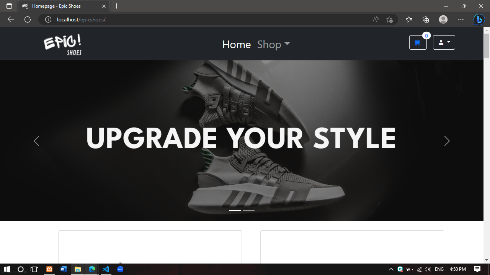

Epicshoes
Sepatu sudah menjadi barang yang sangat familiar dan digemari oleh semua kalangan di Indonesia. Maka dari itu, setiap perusahaan sepatu bersaing menciptakan produk untuk menarik perhatian konsumen. Tidak hanya sepatu produk lokal yang sangat digemari masyarakat Indonesia namun sepatu impor sudah sudah menjadi sorotan dan memasuki pasar dalam negeri dengan menyebabkan persaingan yang semakin kompetitif.
Direktur Eksekutif Asosiasi Persepatuan Indonesia (Aprisindo) Sigit Murwito mengatakan sejumlah merek ternama yang tidak masuk dalam kategori lima besar peraih pangsa pasar alas kaki di Indonesia, karena brand popular kelas dunia membidik segmen tersendiri, terutama dari ekonomi kelas menengah ke atas.
Dengan populernya merek sepatu luar di Indonesia, menjadikan masyarakat Indonesia berbondong - bondong mencarinya di berbagai marketplace online yang ada. Biasanya setiap perusahaan sepatu sudah memiliki marketplace online tersendiri namun jika ingin membeli sepatu dengan merek yang berbeda pada marketplace yang berbeda akan sangat memakan ongkos pengiriman. Maka dari itu kami membuat sebuah marketplace online yaitu “Epic Shoes” yang menjual sepatu local juga sepatu luar negeri dengan berbagai merek yang berbeda agar dapat membeli sepatu dengan jumlah lebih dari satu dan merek yang berbeda pula, serta biaya ongkos kirim yang hanya dibayar satu kali saja.
Epicshoes mulai diperkenalkan pada tahun 2022 oleh Mahasiswa dan Mahasiswi Teknik Informatika, di Jakarta. Epicshoes menyediakan berbagai macam jenis, model, dan merek yang cocok digunakan untuk berbagai jenis kegiatan. Dengan sumber daya yang berlimpah Epicshoes mampu menyediakan sepatu dengan kuantitas besar dan kualitas terbaik sehingga semua kalangan dapat memiliki sepatu berkualitas tinggi dengan harga yang terjangkau.
inilah beberapa tampilannya
.png)
.png)